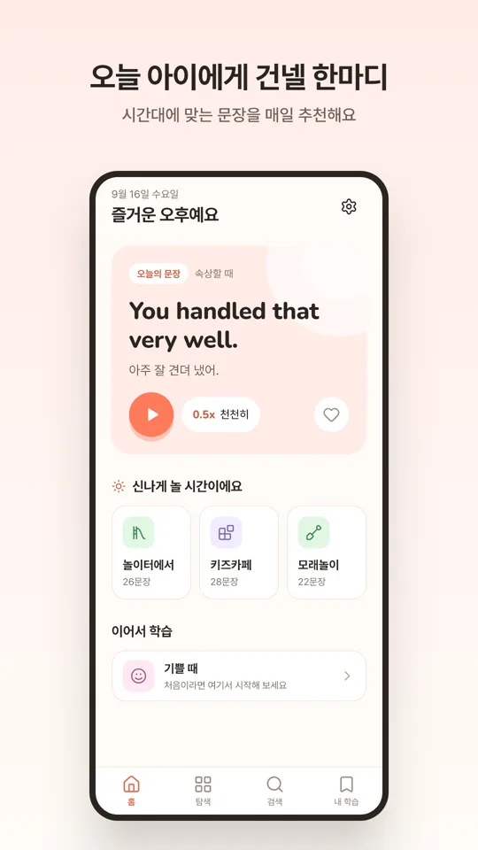
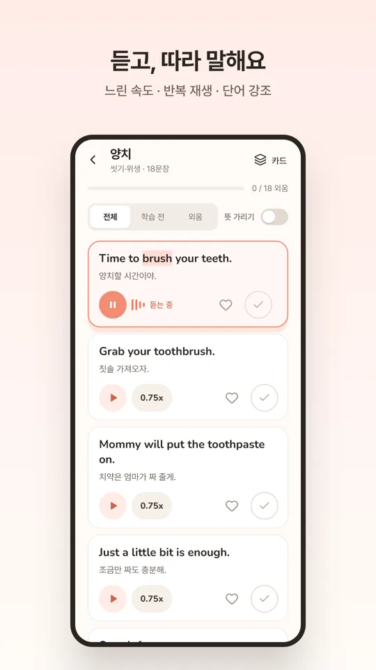
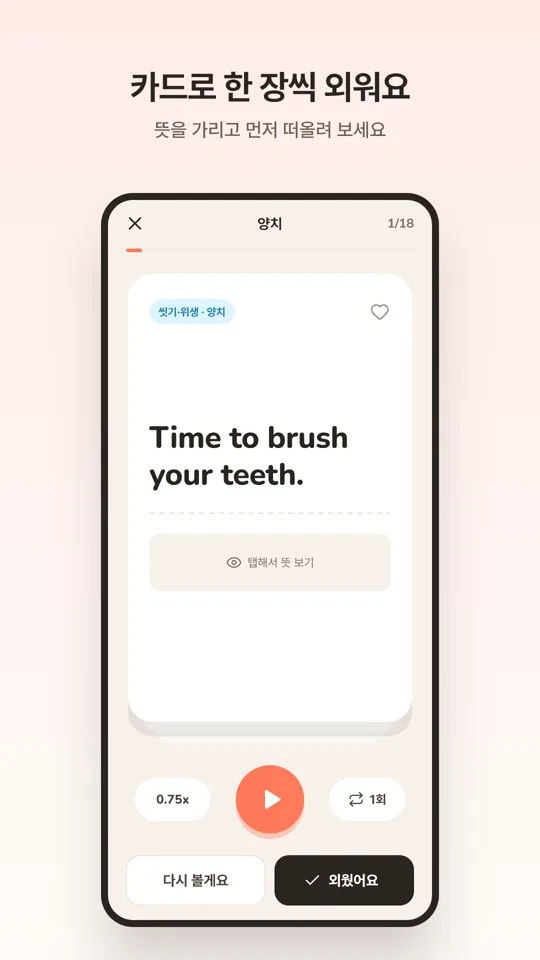
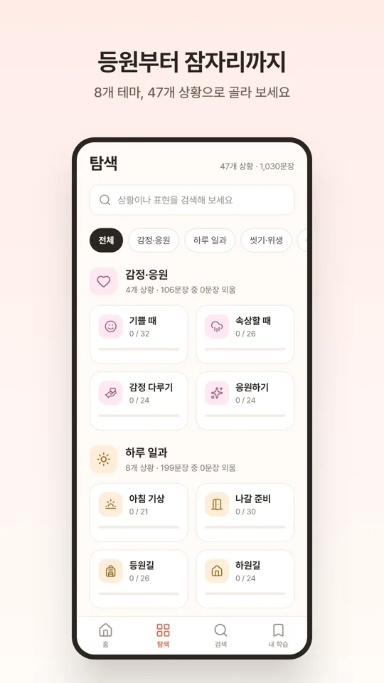
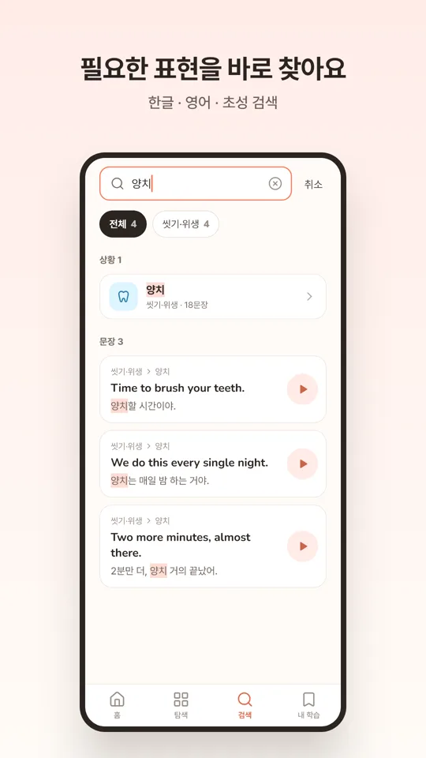
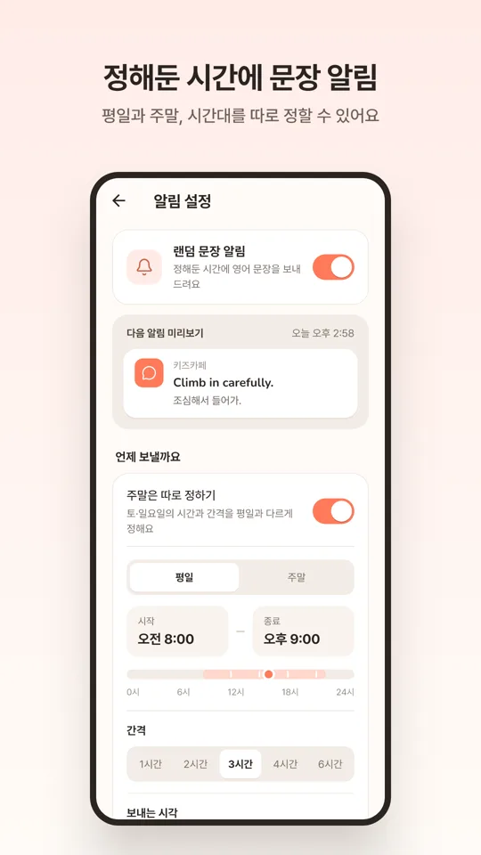
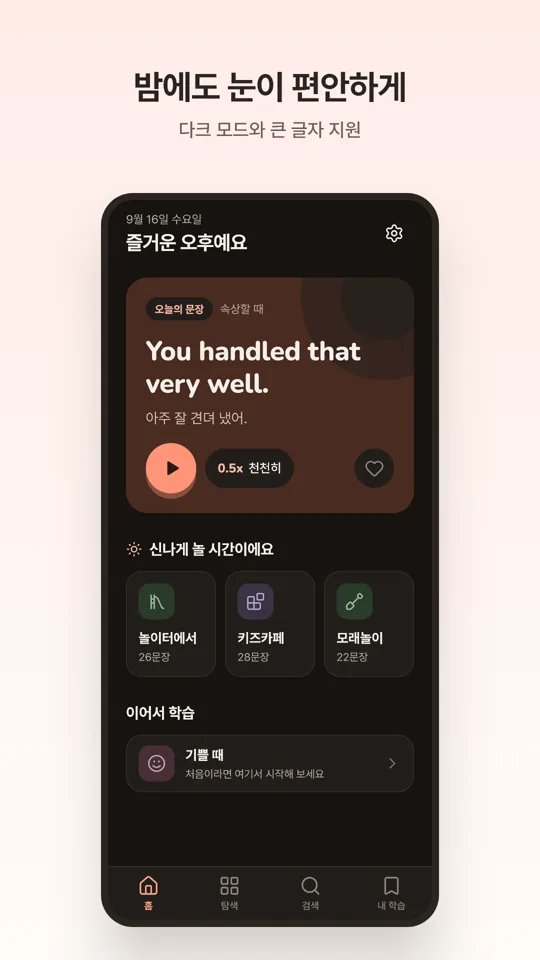

토닥영어로 할 수 있는 것
상황별 육아 영어 표현
감정·응원, 하루 일과, 씻기·위생, 놀이터, 실내 놀이, 건강, 외출·안전, 생활·가족까지 8개 테마, 47개 상황의 영어 문장 약 1,000개와 한국어 뜻.
듣고 따라 말하기
문장을 소리 내어 읽어 주고 읽는 단어를 강조해 보여 줘요. 0.5배·0.75배·1배 속도와 반복 재생, 뜻을 가려 두고 먼저 떠올려 보는 연습.
카드로 외우기
한 장씩 넘기며 "외웠어요" / "다시 볼게요"로 정리하고, 즐겨찾기와 연속 학습일로 꾸준히 이어가요.
한글·영어·초성 검색
필요한 표현을 한글, 영어, 초성(예: ㅇㅊ)으로 바로 찾아요.
정해둔 시간에 알림
시작·종료 시간, 간격, 요일을 고르면 그 시간대에 맞는 문장을 알림으로 보내 드려요. 주말은 평일과 다르게 설정할 수 있어요.
안심하고 쓰는 앱
회원가입과 광고가 없고, 모든 기록은 기기에만 저장돼요. 인터넷 연결 없이도 동작해요.
앱 화면







이런 순간에 써요
- "양치할 시간이야." → Time to brush your teeth.
- 아침 등원 준비, 놀이터에서 친구와 놀 때, 목욕과 잠자리 전 한마디
- 아이가 속상할 때 건네는 위로와 응원의 말
자주 묻는 질문
회원가입이나 광고가 있나요?
회원가입과 광고가 없고, 모든 기록은 기기에만 저장돼요.
인터넷 연결이 필요한가요?
모든 문장 데이터가 앱에 들어 있어 인터넷 없이 동작해요.
어떤 아이에게 맞나요?
아이에게 영어로 말을 건네 보고 싶은 부모를 위한 앱이에요. 부모가 먼저 듣고 익힌 뒤 일상에서 아이에게 건네 보세요.
영어 음성이 나오지 않아요.
기기에 설치된 음성 엔진을 사용해요. 영어 음성이 없다면 기기 설정에서 영어 음성 데이터를 설치해 주세요.